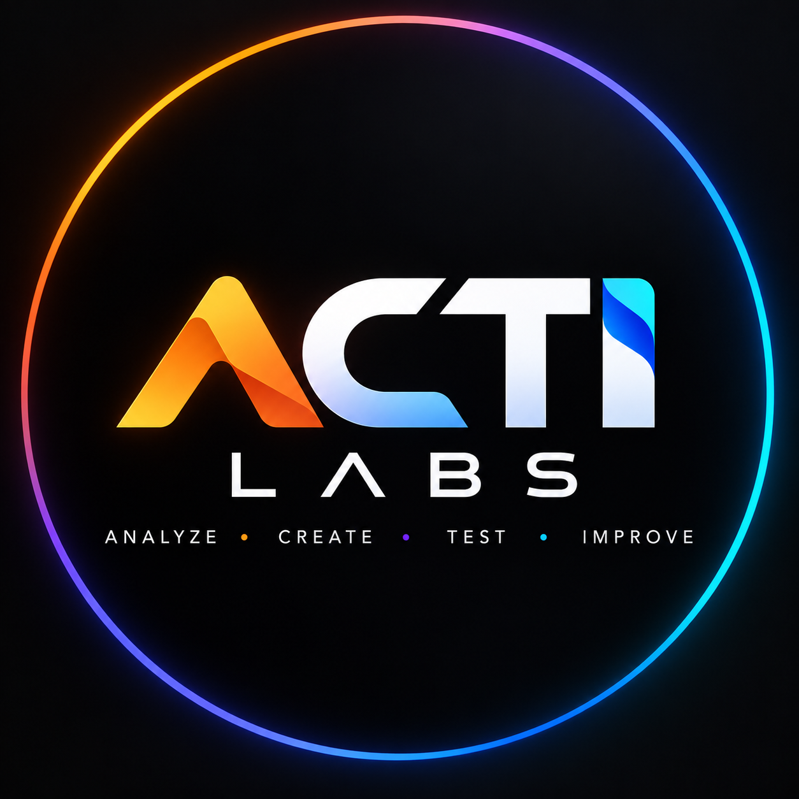

More creative.
Less clarity.
- Generic category claims
- Unverified assumptions
- Discount-led differentiation
- One-off campaign ideas

ACTI LabsAdvertising intelligence, rebuilt
ACTI Labs turns scattered market signals, product evidence, and competitor creative into advertising people can understand—and remember.
Map company and category
DONEExtract products and proof
DONEDecode creative patterns
LIVEFind unclaimed territory
QUEUEDBrands are surrounded by data and still end up making the same ad: a product shot, a feature list, and a discount badge.
ACTI finds what competitors repeat, what customers actually value, and what your product can credibly own—before the first concept is made.
A connected intelligence workflow for teams that need to move quickly without guessing.
MARKET INTELLIGENCE
Map products, pricing, audiences, competitors, and the signals shaping demand.
CREATIVE AUDIT
Decode hooks, offers, visual patterns, and repeated claims across active creative.
CREATIVE STRATEGY
Build ranked concepts with a clear audience, insight, promise, proof, and format.
AI PRODUCTION SYSTEMS
Translate approved strategy into production prompts, variants, and reusable workflows.
Our private intelligence pipeline combines official product data, supplied ad evidence, market research, and AI-assisted analysis in one auditable workspace.
PRIVATE BY DESIGN Client research, strategy, and generation workflows stay private.
Creative work gets stronger when everyone can see why an idea should exist.
We distinguish what is observed, what is inferred, and what we recommend.
Each concept carries one audience, one promise, and one reason to believe.
Automation accelerates the work. Strategy decides what deserves to be made.
We build territories teams can learn from, iterate, and scale over time.
Start with the company
Send us the company, the market, and the work you are running. We will start by finding the clearest opportunity.
Start a conversation ↗